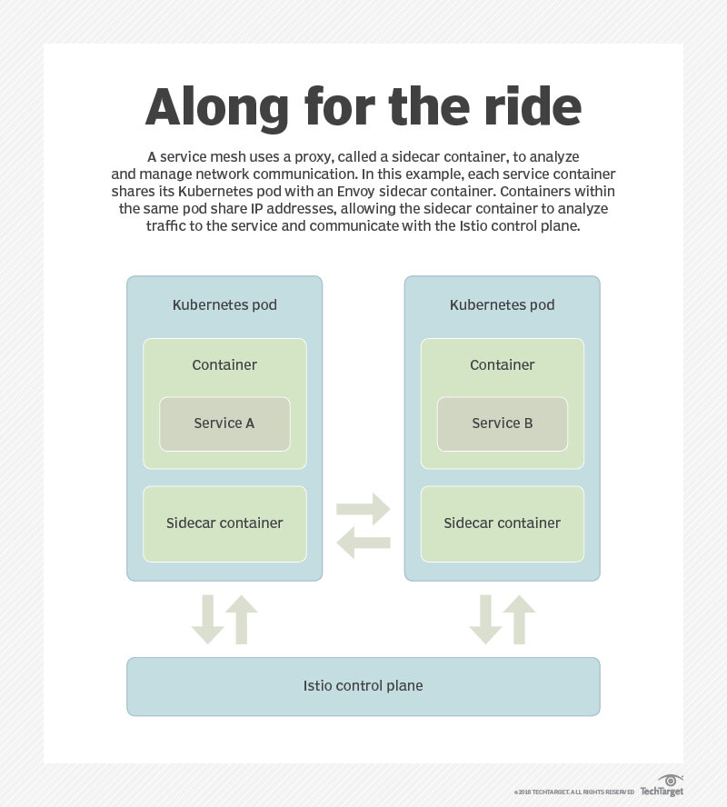

本文为翻译文章，点击查看原文。
容器是IT行业的超级英雄，它与服务网格是最佳组合。它们联手对抗混乱的网络管理。
容器和微服务出现催生了一种称为服务网格的新型网络架构范例，但 IT 观察家们对它是否能够广泛应用到生产上持有不同意见。
服务网格使用一个称为 sidecar 的代理，它是附加在应用程序旁、虚拟机或运行在 Kubernetes 的 pod 中的容器，具体运行在哪里取决于所使用的服务网格的类型。然后，该代理可以连接到集中式的控制平面软件，这些软件收集细粒度的网络遥测数据，应用网络管理策略或更改代理配置，建立并执行网络安全策略。
IT系统中的服务网格架构还处于初期阶段，但与容器一样它上升的很快。在 2017 年 12 月云原生计算基金会（CNCF）举办的 KubeCon 和 CloudNativeCon 上，服务网格已经取代容器成为 DevOps 前沿最热门的话题。
“我们经常发现自己在构建应用软件时，我们实际上在做的是一遍又一遍地编写相同的代码来解决某些实际上非常困难的计算机科学问题，这些问题应该被考虑到某种通用接口中”，微服务监控创业公司 LightStep 首席执行官 Ben Sigelman 在 KubeCon 的服务网格主题演讲中表示。
“服务网格可以用来做发现服务、服务连接、断路、负载均衡……安全和身份验证” , Sigelman说，他是前谷歌工程师，OpenTracing 的创建者，OpenTracing 是开源的，提供供应商无关的 API。
服务网格简史
最早版本的 sidecar 代理技术在 2016 年初开始出现在如谷歌和推特的网络商店，微服务管理需要对网络进行新的思考。与传统的单体应用程序不同，微服务依靠外部网络来沟通和协调应用程序功能。这些微服务通信需要密切监控，有时需要大规模重新配置。
用于微服务网络管理自动化最早的技术依赖于库，作为应用程序代码的一部分进行部署，如 Netflix 的 Hystrix。因此，开发人员需要进行网络管理。这些库也必须用特定环境中使用的每种应用程序语言编写。这提出了一个难题，因为微服务精神的一个主要原则是小团队可以自由地使用任何语言进行独立的服务管理。
大多数认为自己正在使用微服务的组织并没有真正做到微服务。——Anne Thomas，Gartner 分析师
在 2016 年初，第一批在 Twitter 上实施微服务的工程师成立了 Buoyant 公司，该公司采用 sidecar 代理方法替代应用程序库。Buoyant 在 2016 年年中创造了Service Mesh这个术语，其最初的服务网格产品 Linkerd 使用 Java 虚拟机（JVM）作为 sidecar，这种设计将网络管理负担从应用程序开发人员转移出来，并支持对多语言的集中管理应用网络。到目前为止，Linkerd 是主流企业级 IT 商店中唯一上生产环境的服务网格架构。使用的客户包括 Salesforce、PayPal、Credit Karma、Expedia 和 AOL。
Linkerd 刚刚站稳了脚跟，Docker 容器和 Kubernetes 容器编排又将 Buoyant 工程师送回了原点。终于在2017 年 12 月，该公司发布了 Conduit，一种基于轻量级容器代理的服务网格架构，而不是 Linkerd 中使用的耗资源的 JVM。它专门用于与 Go 和 Rust 应用程序语言组合使用的 Kubernetes 。
Kubernetes 社区正在为 Go 编写轻量级服务，可能需要 20 MB 或 50 MB 的内存才能运行，而 Linkerd 的 JVM 可能会占用 200 MB 的内存，对于 Kubernetes 爱好者来说这是一个矛盾点，William Morgan——Buoyant 的联合创始人兼首席执行官这样说。
Morgan 说：“为此消耗大量内存是不最理想的，特别是其价值主张是成为开发人员不必担心的底层基础架构的一部分时。
但就在 2017 年初 Buoyant 工程师开始重新考虑其服务网格架构时，Kubernetes 的创造者谷歌和重量级技术公司 IBM 联手 Lyft 公司的 Envory 创建了 Istio。鉴于其支持者的声誉和谷歌内部管理大规模基于容器的微服务的经验，这种基于容器的服务网格引起了业界的广泛关注。Google 基于其内部的服务控制工具向 Istio 提供控制平面软件，而 IBM 则添加了控制平面工具 Amalgam8。Istio 是基于 Lyft 的 Envoy sidecar 代理，该公司是为了控制平面接收命令而建立的。它可以动态读取到 sidecar 的配置更新，而无需重启 。

Istio 的支持者正在与 Kubernetes 所在的 CNCF 进行长期管理谈判。他们计划在 2018 年第三季度发布 1.0 版本。
到目前为止，Linkerd 和 Istio 已经成为这个新兴市场中最具影响力的项目，但是还有很多服务网格架构项目正在进行中，包括开源和专有选项。这些项目中有许多是基于 Envoy sidecar。Nginx 基于其 Nginx Plus代理引入了自己的集中式管理控制平面。其他早期的服务网格希望包括 Turbine Labs 的 Houston、Datawire 的 Ambassador、Heptio 的 Contour、Solo.io 的 Gloo 和 Tigera 的 CNX。
谁需要服务网格？
现在判断服务网络架构在主流企业 IT 商店中的普及度还为时过早，这些 IT 商店不适用于 Twitter 或 Google 。
Gartner 分析师 Anne Thomas 表示，对于以有限方式使用容器的组织，现有的 API 网关、Kubernetes 或 PaaS 软件（如 Docker Enterprise Edition 或 Cloud Foundry）的服务发现和网络管理功能可能已经足以提供微服务支持。
“大多数认为自己正在实施微服务的组织并没有真正做到真正的微服务 “，Thomas 说。“我不相信真正的微服务将成为传统企业中的主流。”
服务网格允许您以集中的方式管理流量，这种方式可以让屏蔽环境对技术的影响 ，我觉得这在任何规模上都很有用。——Zack Angelo BigCommerce 平台工程总监
对 Thomas 来说，真正的微服务是尽可能独立的。每个服务处理一个单独的方法或领域功能；使用自己的独立数据存储；与其他微服务依靠基于异步事件的通信；并允许开发人员设计、开发、测试、部署和替换这个单独的功能，而无需重新部署应用程序的任何其他部分。
“很多主流公司并不一定愿意花将大量的时间和金钱投入到应用架构上”，Thomas 争辩道。“他们仍然在以更粗粒度的方式做事且不会使用服务网格，至少在网格以服务的方式添加到平台，或者在出现新型开发框架之前“。
很多服务网格的早期用户认为并不一定需要有大量的微服务才能从该技术中受益 。
“它可以让你以集中的方式管理流量，流量在不同的环境和技术中是一致的，我觉得这在任何规模上都很有用”，位于德克萨斯州奥斯汀的电子商务公司 BigCommerce 的平台工程主管 Zack Angelo 这样说，他们使用 Linkerd 服务网格。“即使你只有十几个服务，这也是非常有用的功能”。
Angelo 说，传统的网络管理概念，例如负载均衡器，无法按微小的百分比把流量路由到某些节点 ，以便进行金丝雀或蓝/绿发布。传统的网络监控工具也不提供服务网格所提供的那种细粒度的遥测数据，能够跟踪 99% 的应用程序延迟中的微小异常，其重要性在微服务网络中被放大。
Linkerd 的负载均衡模式使用了一种称为指数加权移动平均的技术，以便当服务网格跨主机分配网络流量时，它会考虑下游服务响应的速度，然后将流量路由到服务性能最佳的地方，而不是传统循环负载均衡技术。
获取实时数据并为每位用户提供个性化体验这很重要。 Jennifer Lin——Google 的 Istio 产品总监
“我们的应用分布在多个数据中心，很高兴能够将该技术内置到我们的负载均衡器中，它能自动感知并选择最快的网络路径 ”。Angelo 说。“从故障转移的角度来看，这对我们也很重要”。
并不是说使用服务网络时不需要权衡 ，特别是当涉及到 IT 运维人员不熟悉高级网络概念管理的复杂性时。Angelo 表示，如果管理不当，集中式控制平面可能会成为单点故障，尽管企业可以通过在其服务网格设计中增加弹性来降低这种风险。
“如果在服务发现中发生了某些不好的事情，向 Linkerd 节点提供陈旧的数据或其他内容，负载均衡池中存在错误的主机，则即使服务发现信息不正确，Linkerd 失败算法也会将其从池中取出，这真是太棒了“，Angelo 说。
其他公司看好 Istio 的集中化网络监控功能，计划在 Istio 进入 GA 状态后跟进。
“我们仍然有 PHP、Node 和 Go 中程序代码，以及三种不同的方式来收集日志，监控服务和运行状态”，Harrison Harnisch说道，他是一名位于芝加哥的Buffer公司员工，该公司提供一个美国的分布式社交媒体管理平台。”但如果我们能够通过服务网络获得所有内容，我们就可以使用相同的模式进行日志记录，并构建模板 dashboard 以便跨团队共享，这在现在很难做到” 。
Istio 创造者对服务网格未来的展望
即使在银行业等传统行业中，开发人员也在创建复杂的面向消费者的应用程序，这些应用程序看起来更像是Google 这样的大规模的网络应用程序。
“重要的是，他们有实时数据，并且他们为每个用户提供个性化体验”，谷歌 Istio 产品管理总监 Jennifer Lin 说。“这需要一个更细粒度的服务集，允许这些创新的应用程序以安全的方式以极低的延迟处理大规模的流量 ” 。
IBM 工程师 Daniel Berg 说，精细的流量路由和安全策略也将成为 IBM 推出的基于 Istio 的混合云概念的关键组成部分，并将用于管理私有云和公有云中的微服务。
“客户将需要一个网格来帮助组织和管理传统应用向云原生应用程序之间转换所带来的复杂性 ”， Berg 说。“如果您开始一将网格作为应用程序的一部分，当您将其移植到另一个未使用该网格的供应商中时，尽管它仍可以运行，但会得到完全无法预期的结果，这种做法是不可取的“。
但 Envoy 的高级软件工程师 Matt Klein 表示，主流企业最有可能等到服务网格成为公有云容器服务和 PaaS 产品的一部分时才开始真正使用它，这与 Gartner 的 Thomas 的预测相呼应 。
“你可以想象它可以像 AWS Fargate 那样工作，为每个用户函数或容器旁自动注入一个如 Envoy 这样的代理，而且用户只需要了解这些功能而无需关心它们是如何实现的“ ，Klein 说。“它们可以获得服务网格提供功能，但对那到底是不是服务网格并不重要 ”。
Klein 说，也有人猜测过度到这种状态服务需要多长时间。
Klein 说：“在公共云中某种技术成熟大约需要 10 到 20 年的时间 ，对于像微软 Azure、Google 云平台和亚马逊这样百年企业，我们正处于该过程的初级阶段”。